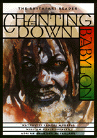

A comprehensive and indispensable study of the Rastafarian Movement
A comprehensive and indispensable study of the Rastafarian Movement


 A comprehensive and indispensable study of the Rastafarian Movement
A comprehensive and indispensable study of the Rastafarian Movement

|  |
Chanting Down BabylonThe Rastafari Readeredited by N. Samuel Murrell, William D. Spencer and Adrian Anthony McFarlanepaper EAN: 978-1-56639-584-7 (ISBN: 1-56639-584-4) |
Philadelphia Book Clinic Certificate of Award, 1999
"Long before the term 'Afrocentricity' came into popular use in the United States, Jamaican Rastafarians had embraced the concept as the most important recipe for naming their reality and reclaiming their black heritage in the African diaspora."
—Nathaniel Samuel Murrell, from the Introduction
This anthology explores Rastafari religion, culture, and politics in Jamaica and other parts of the African diaspora. An Afro-Caribbean religious and cultural movement that sprang from the streets of Kingston, Jamaica, in the 1930s, today Rastafari has close to one million adherents. The basic message of Rastafari—the dismantling of all oppressive institutions and the liberation of humankind—even has strong appeal to non-believers who are captivated by reggae music, the lyrics, and the "immortal spirit" of its enormously popular practitioner, Bob Marley.
Probing into Rastafari's still evolving belief system, political goals, and cultural expression, the contributors to this volume emphasize the importance of Africana history and the Caribbean context.
Excerpt available at www.temple.edu/tempress
Part I. Ideology and the Cultural Context
1. Dread "I" In a Babylon: Ideological Resistance and Cultural Revitalization – Ennis B. Edmonds
2. Rastafari: A Psychology of Blackness and Somebodiness – Clinton Hutton and Nathaniel Samuel Murrell
3. Rastafari and the Exorcism of the Ideology of Racism and Classism in Jamaica – Barry Chevannes
4. Gender and Family Relations in Rastafari: A Personal Perspective – Maureen Rowe
5. Rasta Woman as Rebel – Imani M. Tafari-Ama
6. The Epistemological Significance of "I-an-I" as a Response to Quashie and Anancyism in Jamaican Culture – Adrian Anthony McFarlane
Part II. Roots and Historical Impact
1. African Dimensions of the Jamaican Rastafarian Movement – Neil J. Savishinsky
2. Marcus Garvey and the Early Rastafarians: Continuity and Discontinuity – Rupert Lewis
3. Who Is Haile Selassie? His Imperial Majesty in Rasta Voices – Sister Eleanor Wint and members of the Nyabingi Order
4. The Rasta-Selassie-Ethiopian Connections – Clinton Chisholm
5. Chanting Down Babylon Outernational: The Rise of Rastafari in Europe, the Caribbean, and the Pacific – Frank van Dijk
6. Chanting Down Babylon in the Belly of the Beast: The Rastafari Movement in Metropolitan USA – Randal L. Hepner
7. A Personal Reflection of Rastafari in West Kingston in the 1950s – George Eaton Simpson
Part III. Back-O-Wall to Hollywood, The Rasta Revolution Through the Arts
1. From Burru Drums to Reggae Ridims: The Evolution of Rasta Music – Verena Reckord
2. Bob Marley: Rasta Warrior – Roger Steffens
3. Chanting Change Around the World Through Rasta Ridim and Art – William David Spencer
4. Towering Babble and Glimpses of Zion: Some Recent Depictions of Rastafari in Cinema – Kevin Aylmer
Part IV. Religion: Livity, Hermeneutics, and Theology
1. Discourse on Rastafarian Reality – Hon. Rex Nettleford
2. The Black Biblical Hermeneutics of Rastafari – Nathaniel Samuel Murrell and Lewin Williams
3. The Structure and Ethos of Rastafari – Ennis B. Edmonds
4. The First Chant: Leonard Howell's "The Promised Key" – commentary by William David Spencer
5. Rastafari's Messianic Ideology and Caribbean Theology of Liberation – Nathaniel Samuel Murrell and Burchell K. Taylor
Appendices:
A. Emissaries of Rastafari: An Interview with Professor Leonard Barrett, Indego Bethea, Michael Bruny, and Adrian McFarlane
B. Who Is Who in the Rasta Academy: For Starters, A Lit Review in Honor of Leonard Barrett
Nathaniel Samuel Murrell is Assistant Professor of Philosophy and Religion at the University of North Carolina, Wilmington, and Visiting Professor at the Caribbean Graduate School of Theology in Kingston, Jamaica.
William David Spencer serves as Pastor of Encouragement at Pilgrim Church in Beverly, MA, and was an Adjunct Professor of Theology at Gordon-Conwell Theological Seminary's Center for Urban Ministerial Education in Boston. He has authored, co-authored, or edited The Prayer of Life of Jesus, Mysterium and Mystery: The Clerical Crime Novel, God through the Looking Glass, Joy through the Night, 2 Corinthians: Bible Study Commentary, and The Global God.
Adrian Anthony McFarlane is Associate Professor of Philosophy and Chair of the Department of Philosophy and Religious Studies at Hartwick College in Oneonta, NY. He is author of A Grammar of Fear and Evil–A Husserlian-Wittgensteinian Hermeneutic.
Latin American/Caribbean Studies
Religion
Philosophy and Ethics
© 2015 Temple University. All Rights Reserved. This page: http://www.temple.edu/tempress/titles/1244_reg.html.